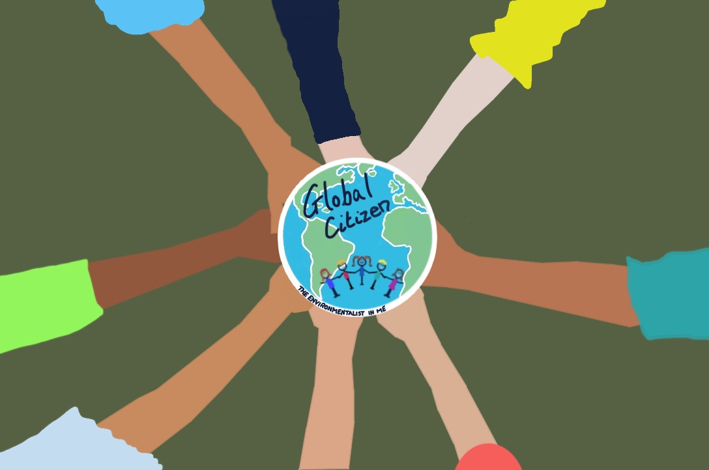

Getting young children interested in environmental issues - GLOBAL PERSPECTIVES
Tue, 16 Apr 2019 20:26:35

Global citizens.
Global Perspectives
Helping our children become globally aware and responsible adults will assist them to make positive connections between other cultures and societies, and hopefully create a global community that allows equality and
opportunities for all.
Societies across the world have to become part of an interconnected community in order to achieve quality and sustainability for all.
The movement to foster global citizenship acts on concerns about social justice and sustainable development and the recognition of the potential of children to be active agents of change.Nurturing Citizenship in the Early Years
Civic responsibilities
Global citizens understand their civic responsibilities, and care about improving their communities.
Global citizenship try to be culturally aware, they search for opportunities to learn about other people's cultures and think about ways other peoples lives are the same and different from theirs.
Talk about how children across the world will be celebrating with their family and friends – teach your child that we live in a multicultural and diverse world.
Design your own cards to give to family and friends.
Have a themed meal with your child, incorporating different cultures.
Hang a wall map or purchase a globe which will help your child to see where other countries are in relation to where you live.
Other areas to look at:
Languages.
Homes.
Families.
Daily lives.
History.
Environment
Global citizens understand that the environment is shared by everyone, they are empowered to live within the environmental limits of our planet and to build a just, equitable and peaceful society.
Activity Ideas
Have a picnic, once finished pick up the litter, your child will learn to respect the natural world, learn right from wrong and to have social responsibility.
Whilst out on a walk look at everything around you – your child can learn about the world in which they live in.
The blogs in this series will have a number of activities that will cover different areas and will hopefully get young children to learn and practice green living habits, gain skills that reflect care and protection of
the environment as well as learning the impact they have on the environment.